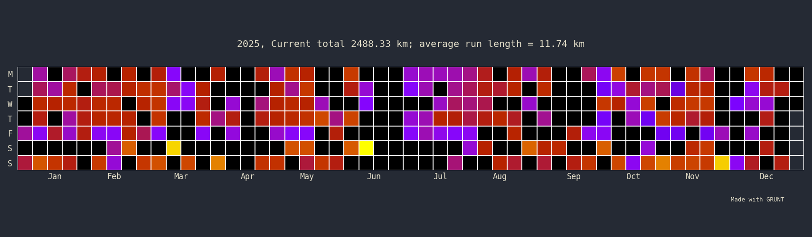
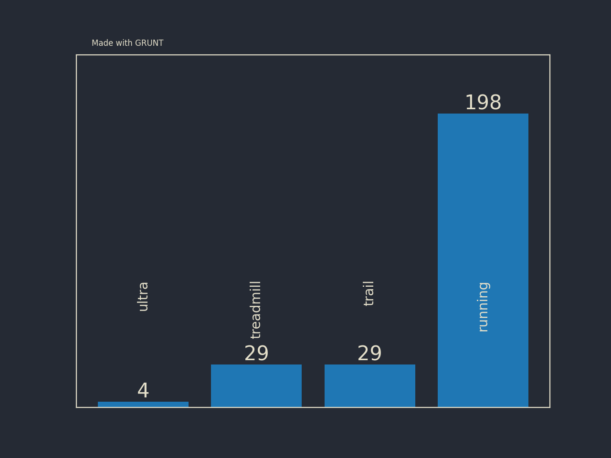
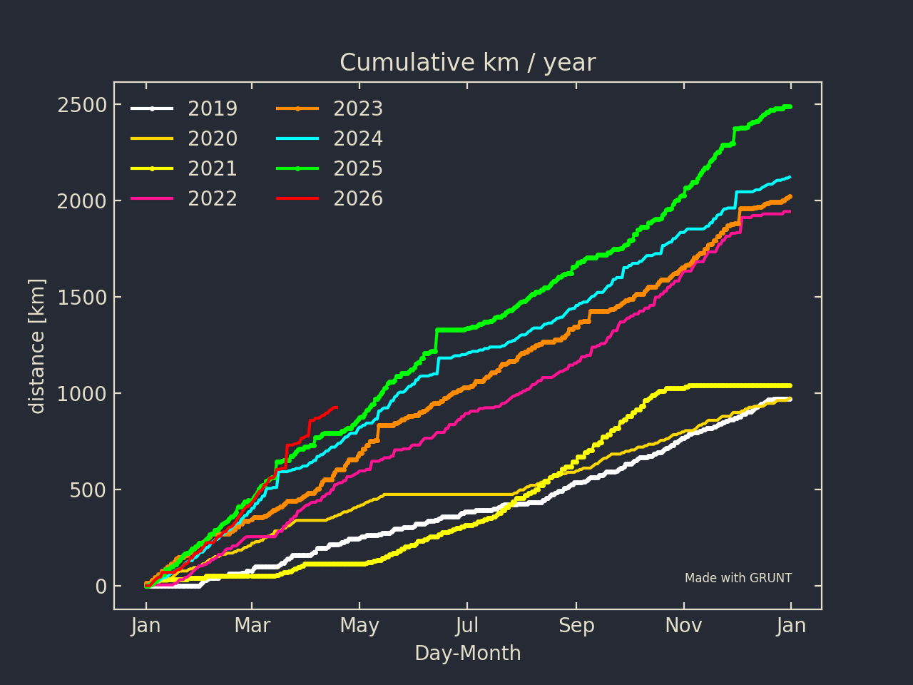
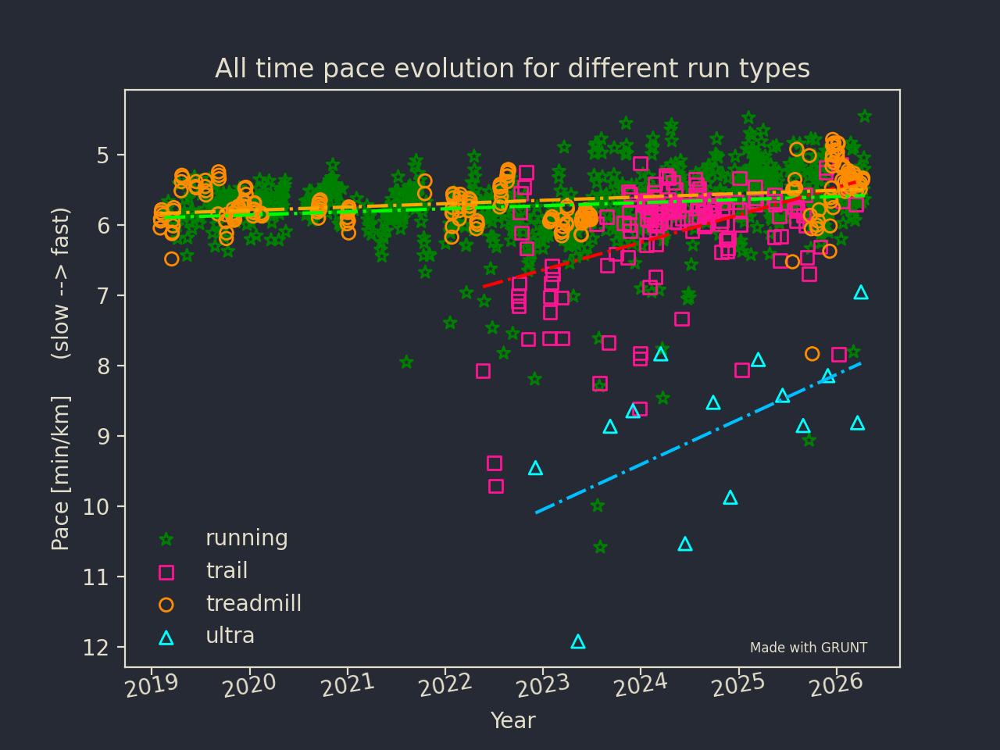
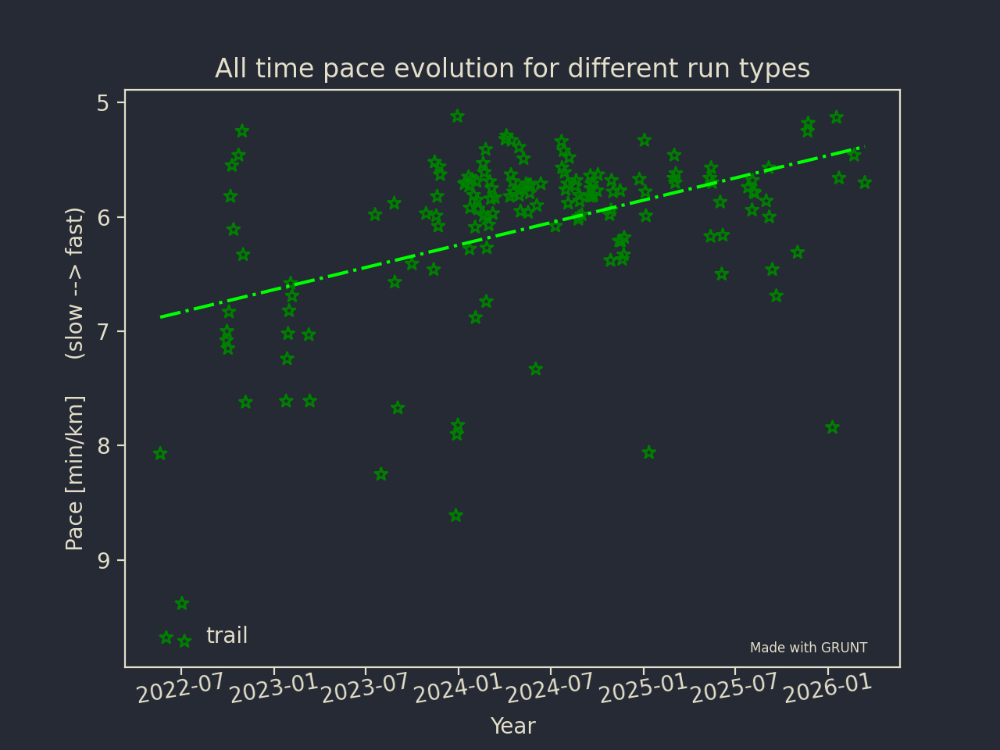
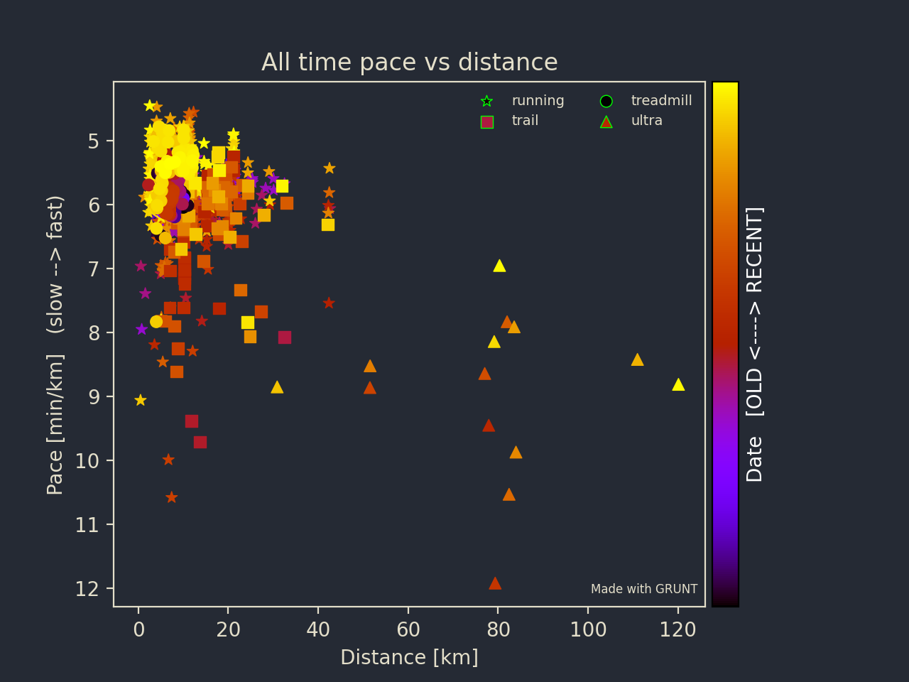

Grunt data visualisation
This is where I explain what plots GRUNT can make and how you can customize them. We are assuming that you already downloaded the data. If you did not, please look at Download data.
General configuation
In the configuration file, three options are available and will be used throughout the rest:
[Plot_general]
dpi = 200
text = 228,223,202
background = 37,42,52
dpi controls the resolution, text control the text color (given in RGB values), background gives the general background of the plot (in RGB values as well).
In addition, each of the other section you will allow you to adjust the following:
##Would appreciate if that stays, so GRUNT gets more visibility
credit = true
credit_x = 0.90
credit_y = 0.15
This displays the “Made with GRUNT” text on the plot. I’d appreciate you leave it. But of course you don’t have to. You can change credit = true to credit = false to remove. The two other parameters are adjusting the position of the text.
Running density calendar
This plot is the equivalent of the GitHub commit density calendar adapted for running. To create it you need to enter the following command:
user@machine % grunt --yearcal 2026 --conf conf_default.txt
In the configuration file, the customization available are:
[Plot_calendar]
colormap = gnuplot
##Would appreciate if that stays, so GRUNT gets more visibility
credit = true
credit_x = 0.90
credit_y = 0.15
The only major control you have for the that plot is the colormap scheme. You can use whatever is available in matplotlib. The resulting calendar is shown below:
{kind=link}

Running density Calendar
Run type histogram
The second plot that you can do is the run type histogram. It shows you the number of each type of run you do in a given year. The command to create it:
user@machine % grunt --runtype 2025 --conf conf_default.txt
The customisation in the configuration file is:
[Runtype_plot]
rt_pad = -100
##Would appreciate if that stays, so GRUNT gets more visibility
credit = true
credit_x = 0.15
credit_y = 0.90
rt_pad adjust the position of the vertical text on each bar of the histogram. The final results shows is visible in the next figure.
{kind=link}

Run type histogram
Cumulative running Distance
The cumulative running distance plots overlaps on the same plot a curve for each year available on the data. Each curves represent the cumulative distance over the year. To create it, enter the following command:
user@machine % grunt --conf conf_default.txt --compare_distance
The available customisation parameters are
[Compare_distance_plot]
####Compare distance plot
compare_colors = white,gold,yellow,deeppink,darkorange,cyan,lime,red
compare_signs = .,.,.,.,.,.,.,.,-.
##Would appreciate if that stays, so GRUNT gets more visibility
credit = true
credit_x = 0.75
credit_y = 0.15
Two main parameters:
compare_colors: The color of each curve. You should have one color per year.compare_signs: the linestyle of each curve.
The resulting figure is visible below.
{kind=link}

Cumulative running distance
Pace evolution over time
The next plot that you can do is the all-time evolution of the pace with time for a given running type. The command is:
user@machine % grunt --conf conf_default.txt --pace OPTION
OPTION can take the following options: running, ultra_run, treadmill_running, trail_running, all. For each type, GRUNT will make a linear fit of the data.
Customisable parameters are:
[Pace_plot]
colors = green,deeppink,darkorange,cyan
signs = *,s,o,^
fit_colors = lime,red,orange,deepskyblue
##Would appreciate if that stays, so GRUNT gets more visibility
credit = true
credit_x = 0.75
credit_y = 0.13
colors lets you choose the color of the plot. If you asked for all, you need to give 4 colors. As this is a scatter plot, you will also need to give the marker signs. One for each run type as well. Finally, you need to choose the color of the fit (fit_colors). Again, one for each run type.
This gives you the following figure:
{kind=link}

All time Evolution of the pace per running type (‘all’ option)
{kind=link}

All time Evolution of the pace per running type (‘trail_running’ option)
All time Pace vs Distance
The pace vs distance is the next one you can have a look at. The command to run it is:
user@machine % grunt --pvd --conf conf_default.txt
Again, the available customization are:
[Pacedistance_plot]
signs = *,s,o,^
colormap = gnuplot
##Would appreciate if that stays, so GRUNT gets more visibility
credit = true
credit_x = 0.65
credit_y = 0.13
signs gives the sign to attribute to each runtype while colormap colors the markers based on the date.
{kind=link}

All time, all type, pace VS distance